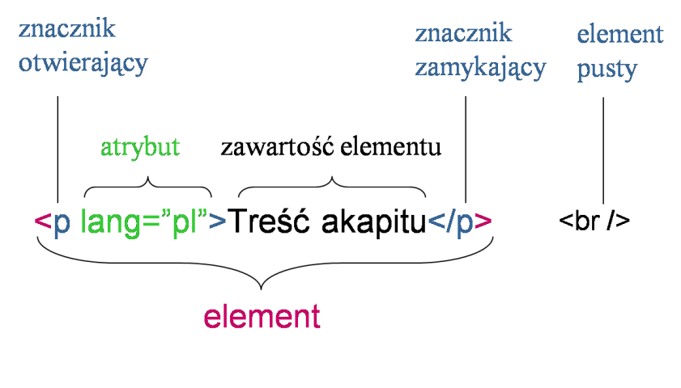
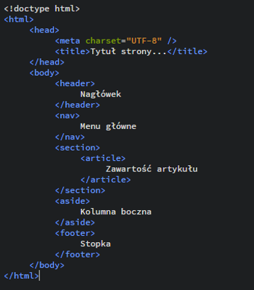
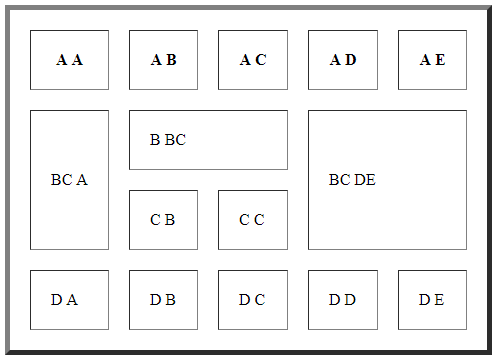
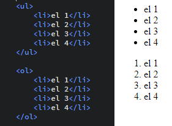
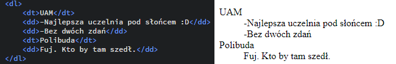
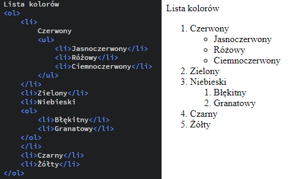

WARSZTATY WEBOWE Mikołaj Szumigalski
Powrót
Zajęcia 3
Link do pobrania prezentacji z zajęć nr 3: Prezentacja 3
0. Krókie przypomnienie do GIT'a
Na poprzenich zajęciach nauczyliśmy się tworzyć repozytorium na GITHUBie, clonować je, tworzyć lokalne repozytoria, commity i dodawać nowe rzeczy na serwer GITHUB'a
Wielu z tych czynności nie trzeba powtarzać oczywiście kolejny raz jeśli chcemy wrzucić jakieś dane na serwer z tego samego komputera. Dletego wrzucam tu taką mini-ściągawkę, która może pomóc w sprawnym wrzucaniu prac domowych na Wasze repozytoria
- Potrzebujemy sklonowanego repozytorium z poprzedniej pracy domowej (Projekt HTML) i wchodzimy do głównego katalogu
- Dodajemy / zmieniamy pliki
- używamy git add -A luba zastępujemy -A nazwą pliku, który chcemy umieścić. -A uwzględni w commicie wszytkie nowe/zmieniane pliki
- git commit -m "nazwa commita"
- git push
I to wszystko, w razie problemów proszę pisać na maila czy fb
1.Wstęp do HTML
Skrót html oznacza Hypertext Markup Language, czyli hipertekstowy język znaczników:
- hipertekstowy - tekst podzielony na niezależne części połączone hiperłączami (czyli nie mamy jednej strony tylko nasza strona jest podzielona na mniejsze podstrony począczone linkami (hiperłączami))
-język znaczników - teksty dzielimy, stylujemy itd. za pomocą znaczników - poleceń zmkniętych w nawiasy <>.
1.1 Znacznik
2.Szkielet dokumentu HTML
Znaczniki html, doctype html określają nam typ dokumentu jako html'owy. Jak widzimy szkielet składa się z głowy(head) i ciała(body).
2.1 Head (Głowa)
Ćwiczenie 1
Co może (powinno) się znaleźć w tej sekcji?
-
-
-
*Znacznik meta
2.2 Ciało (Body)
W ciele znajduje się główna treść strony. Możemy ją przedstawić na różne sposoby. Może to być zwykły akapit z nagłówkiem, może to być tabela, obrazek, czy film. Znajdują się też linki do innych stron, czy linki do plików np. do pobrania.
Na przykładzie widzimy kilka znaczników związanych ze szkieletem strony:
Jednak te znaczniki są znacznikami bardziej grupującymi (nazywa się je strukturalnymi), same w sobie nie powodują zmiany treści tekstu. To tego, aby tekst rzeczywiście zachowywał się w taki sposób należy użyć stylowania tych znaczników.
Są również przydatne znaczniki, które same w sobie zmieniają wygląd treści (tzw. znaczniki semantyczne). Są to m. in.
2.3 Stopka (Footer)
W stopce znajdują się te elementy, które nie są główną treścią strony, ale też może zawierać ważne informacje np o autorze strony. Stopka znajduje się wewnątrz ciała!
Ćwiczenie 2
Co jeszcze może (powinno) się znaleźć w tej sekcji?
-
-
-
3.Tabele
Tabele tworzymy znacznikiem table. Wiersz (row) tworzymy za pomocą znacznika tr, a komórkę tabeli (data) za pomocą td . Wyjątek stanowią komórki nagłówka tabeli, które robimy za pomocą znacznika th.
Co ciekawe, tabela również może składać się z głowy, ciała i stopki. Służą do tego kolejno znaczniki thead , tbody i tfoot . Co więcej nie musimy podawać tych elementów po kolei, aby wyświetlały się w odpowiedniej kolejności, co pokazuje ten przykład
3.1 Łączenie komórek tabeli
Komórki w poziomie łączymy za pomocą atrybutu colspan="x" (column span) gdzie x to ilość komórek, które łączymy w jedną. Analogicznie komórki w pionie łączymy za pomocą atrybutu rowspan="x" . Należy pamiętać że ten atrybut przypisujemy znacznikowi td ( lub th ), a nie np. table , ponieważ odnosi się tylko do tej konkretnej komórki.
Pytanie: A co jeśli użyjemy colspan ="2" i rowspan="2" jednocześnie? Wtedy będziemy mieć komórkę wielkości trzech czy czterech komórek? A może nie wolno łączyć i wybuchnie?
3.2 Obramowanie
Aby dodać obramowanie do tabeli należy użyć atrybutu border="x" gdzie x to grubość tabeli w pixelach.
3.3 Odległość komórek od siebie
Atrybut cellspacing="x" pozwala nam ustalić odległość (wartość x w pixelach) między sąsiadującymi komórkami
3.3 Odległość między wartością komórki a brzegiem
Atrybut cellpadding="x" pozwala nam ustalić odległość (wartość x w pixelach) między wartością komórki a brzegiem
Ćwiczenie
Proszę stworzyć tabelę aby wyglądała tak jak na obrazku poniżej. Proszę, aby w kodzie znalazły się znaczniki thead, tbody i tfoot, oraz znacznik th. Pozostałych znaczników można używać wedle uznania, byle efekt był dobry.
4. Listy
W zależności czy chcemy listę numerowaną (ordered list), czy nienumerowaną (unordered list) używamy odpowiednio znaczników ol i ul . Wewnątrz listy jej elementy powinny znajdować się w znaczniku li (list index). Na przykładzie wygląda to następująco:
4.1 Listy nienumerowane
Elementy listy nienumerowanej wcale nie muszą się zaczynać kropką. Możymy nadać atrybut list-style-type: znacznikowi ul . Możliwe wartości tego atrybutu:
disc kułeczka zamalowane
circle kułeczka niezamalowane
square kwadraciki
none nic
4.2 Listy numerowane
Elementy listy numerowanej również nie muszą być oznaczane cyframi. Możymy nadać atrybut type: znacznikowi ol . Możliwe wartości tego atrybutu:
"1" cyferki
"A" wielkie litery alfabetu łacińskiego
"a" małe litery alfabetu łacińskiego
"I" wielkie cyfry rzymskie
"i" małe cyfry rzymskie
4.3 Lista definicji
Ten rodzaj list trochę różni się charakterem od poprzenich list i na pewno wykorzystaniem. Tutaj zaczynamy tworzenie listy od znacznika dl (description list czyli taki słownik pojęć w polskim rozumieniu). Każde pojęcie będzie się składało z pojęcia (lub kilku) czyli znacznika dt (term), oraz opisu dd (description). Na przykładzie wygląda to tak:
4.4 Zagnieżdżanie list
Nic nie stoi na przeszkodzie aby stworzyć jedną listę w innej liście. Wystarczy odpowiednio używać znaczników. Przykład takiego zagnieżdżenia poniżej.
Ćwiczenie:
Proszę o wykonanie listy numerowanej (jako indeksy wielkie cyfry rzymskie). Niech posiada 6 elementów. W dwóch z nich proszę zagnieździć listy - jedną numerowaną (indeksy mają być małymi literkami alfabetu) i jedną nienumerowaną (indeksy niech będą kwadracikami). Każda z tych list powinna mieć 3 elementy. Dodakowo proszę stworzyć listę pojęć. 2 pojęcia (mają mieć tytuł + krótki opis). Treść dowolna.
Praca domowa
Tworzymy dokument html, który posiada:
-głowę(w środku tytuł strony i kodowanie UTF-8), ciało i stopkę
-nagłówek, 3 akapity dowolnego tekstu i stopkę z informacją o autorze strony
- podkreślenie, pogrubienie, blok cytatu i link
-listę numerowaną, a w niej zagnieżdżoną listę nienumerowaną
-tabelę, która posiada obramowanie, nagłówek, ciało i stopkę
- niektóre elementy powinny być skomentowane (min. 5 komentarzy niech będzie)
Gotowy dokument proszę umieścić w repozytorium Github do końca tej soboty (tj. 11.11.17r.)
Przykład zrobionej pracy (graficzny widok strony):